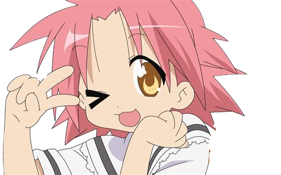
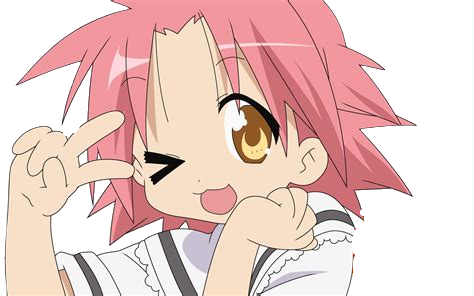
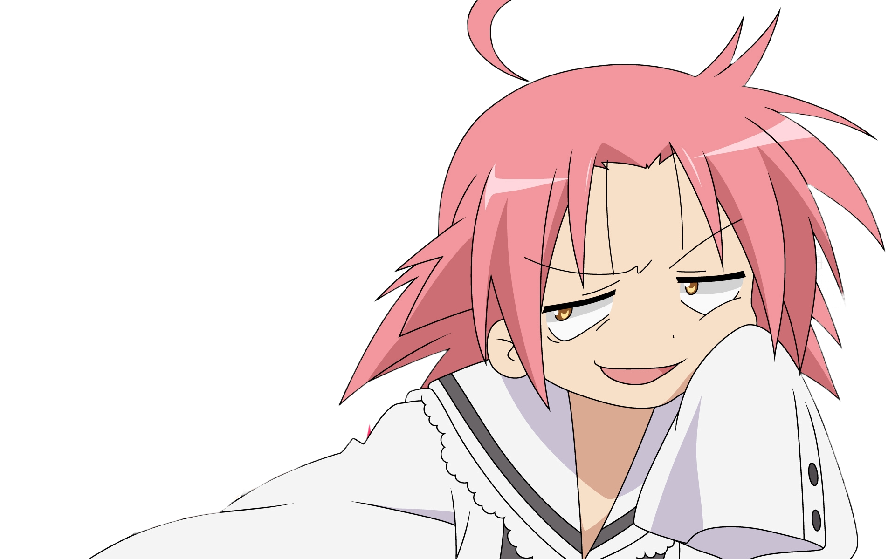

Qui sommes nous ?
Nous sommes une serie télévisé qui se nomme "Lucky Channel", elle apparait à chaque fin d'épisode de la série "Lucky Star", elle résume l'épisode et annonces les nouvelles concernant l'animé Lucky Star

Nous sommes une serie télévisé qui se nomme "Lucky Channel", elle apparait à chaque fin d'épisode de la série "Lucky Star", elle résume l'épisode et annonces les nouvelles concernant l'animé Lucky Star
Lucky Channel est totalement gratuit(si vous n'accordez pas de valeur à votre vie privée) donc n'hésitez pas à nous checker tout les jours
